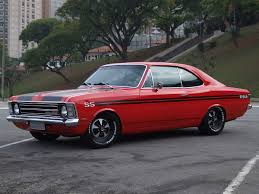

Um homem de 34 anos foi morto a tiros na frente a namorada no bairro Milionários, no Barreiro, em Belo Horizonte. Ler mais..
Um homem de 34 anos foi morto a tiros na frente a namorada no bairro Milionários, no Barreiro, em Belo Horizonte. Ler mais..
O líder da organização criminosa denominada "guangue do Baiano" atuante da vila Bernadete, na região do Barreiro, em Belo Horizonte foi preso no Ler mais..
Encontro de caros antigos na praça do cristo,veja a pagina no facebookver..
Um pouco de sua historia:
A história oficial da região começou em 1855, quando surgiu a Fazenda Barreiro. O seu primeiro proprietário foi o coronel Damazo da Costa Pacheco, que após cultivá-la por muitos anos, resolveu variar de atividade, vendendo-a para o major Cândido José dos Santos Brochado. Dez anos antes da abolição, o major Cândido utilizava a mão-de-obra escrava de forma bastante acintosa. Por contrariar a Lei do Sexagenário, passou a ter várias inimizades entre escravos e abolicionistas, vindo a falecer, ao que consta assassinado por um escravo fugido. O fato fez com a família vendesse o local para o sr. Manoel Pereira de Melo Vianna e saísse da região